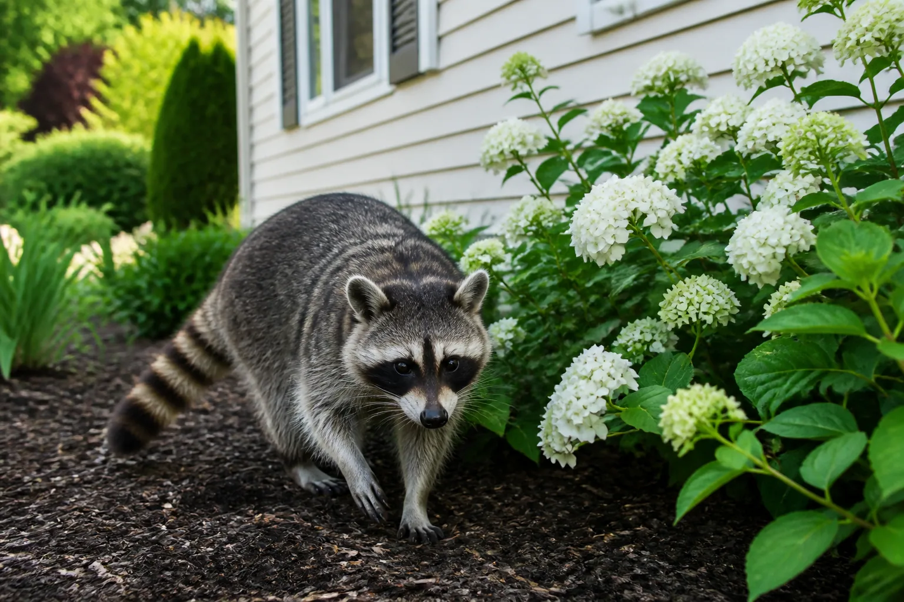
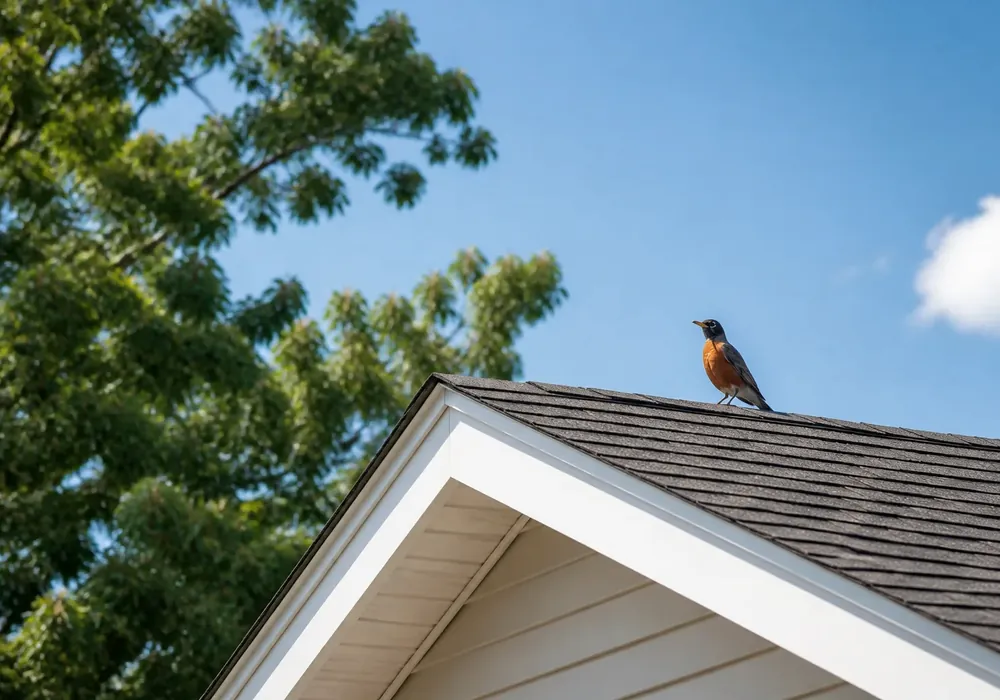
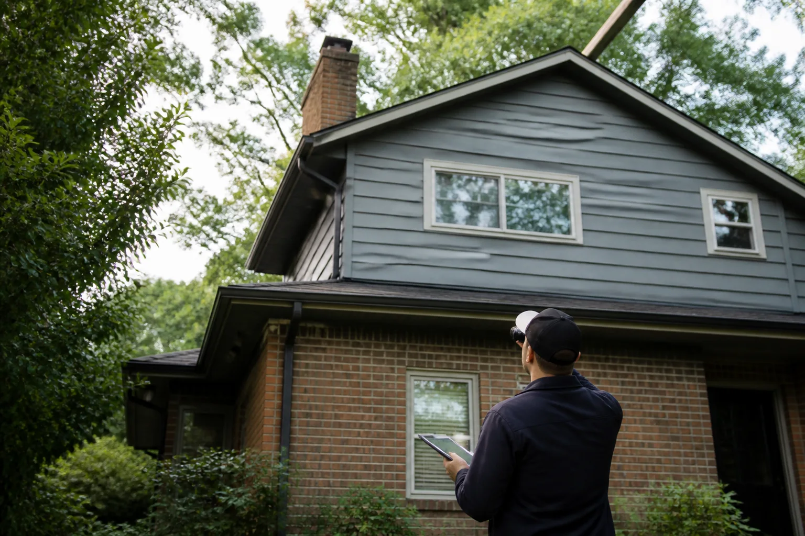
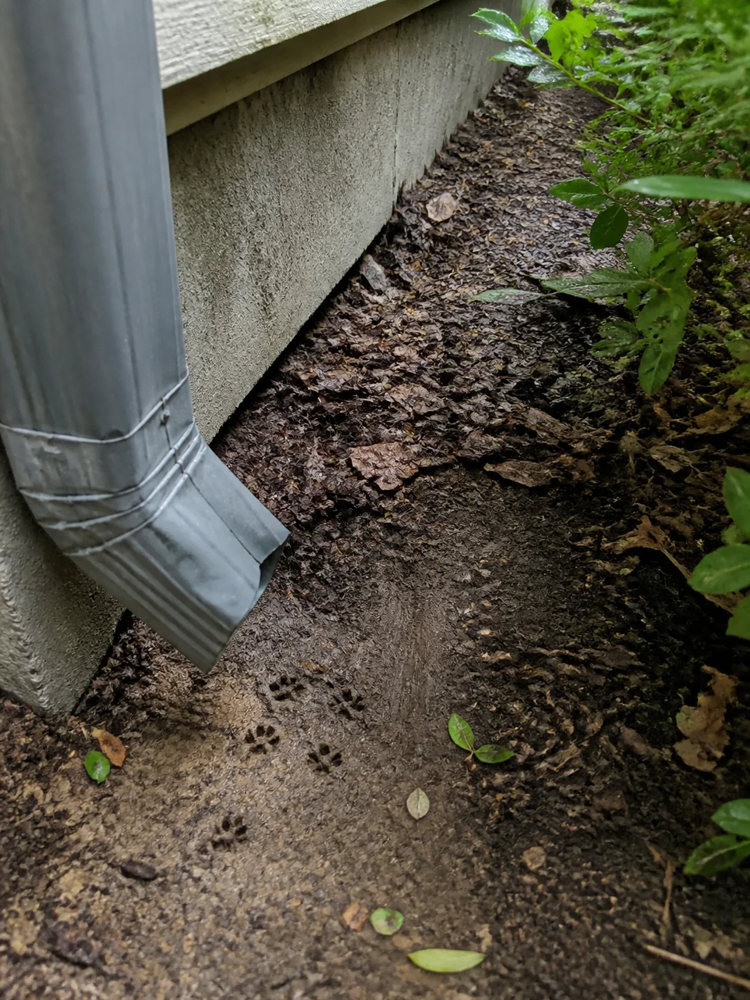

Locate the activity
Review where sounds, sightings, droppings or damage appear and whether the pattern changes by time of day.
Describe the activity and where it is happening. Wildlife Match may introduce the request to independent local providers.
Describe the issue

Choose the situation that most closely matches what you’re noticing around the home.
A provider may combine what you have noticed with exterior and interior observations before discussing possible next steps.
Review where sounds, sightings, droppings or damage appear and whether the pattern changes by time of day.
Species, nesting periods and local rules can affect timing, access and the methods a provider may discuss.
Ask how the proposed approach addresses active animals, possible entry points and any follow-up observations.
A single sound or animal sighting may be only one part of the picture. Providers may compare the roofline, exterior openings, interior evidence and nearby cover to understand how activity relates to the structure.


Activity near eaves, dormers, vents or chimneys may require exterior observation together with attic or ceiling information.
Foundation gaps, crawlspace doors, decks and dense planting can affect access, visibility and the inspection route.
Location, sound pattern, droppings, odor and disturbed materials may help a provider narrow the affected zone without opening finished surfaces immediately.
Tree limbs, food sources, water, stored materials and neighboring structures may influence recurring activity and prevention recommendations.
The provider’s recommendation should be specific enough to compare methods, responsibilities and follow-up—not just a single total price.
Look for the proposed method, timing considerations and any species-specific or seasonal limitations.
Confirm whether the scope covers interior access, exterior openings and photographs of observed conditions.
Clarify whether exclusion, minor repairs, contamination cleanup or restoration require separate approval or providers.
Ask how monitoring, trap checks, one-way devices, final closure and warranty terms will be documented.
Use these questions to guide conversations with independent providers.
Ask how the approach accounts for the species, property and time of year.
Verify required licenses, permits and species-specific restrictions in your area.
Ask how timing and humane decision-making will be handled.
Confirm follow-up visits, scope, pricing, repair responsibility and any warranty.
Use the shared request form to organize the details for possible introduction to independent wildlife-removal providers.